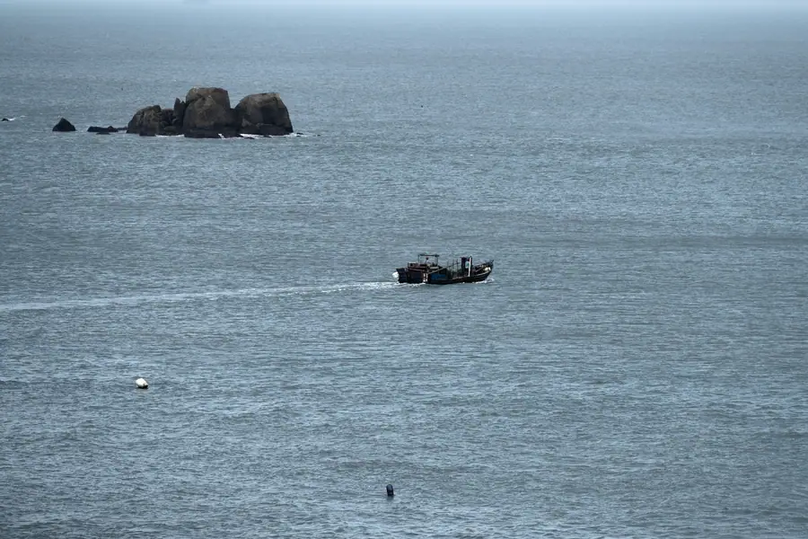
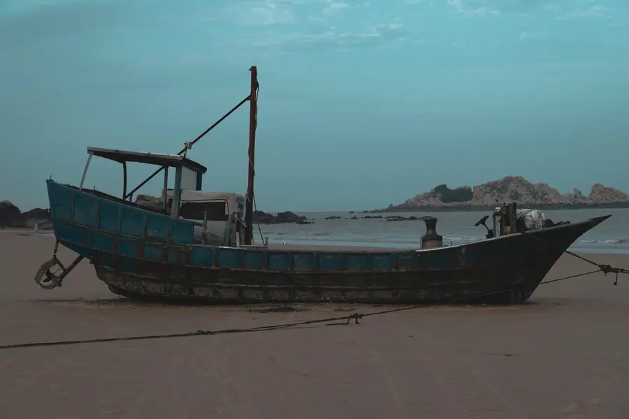
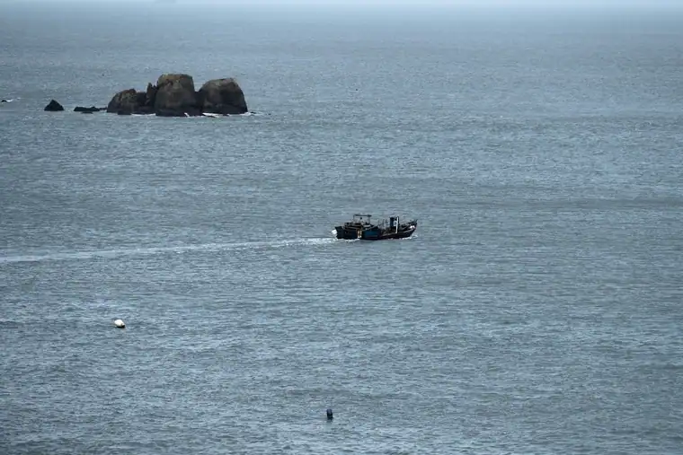

Putian Airport Transfer & Private Car
Licensed professional driver in Fujian's coastal city and Mazu birthplace. Fixed price. Explore the legendary Meizhou Island, Fujian's UNESCO-listed sea goddess shrine, and the coastal city with a private car and driver.
Putian in Pictures
Real scenes from Putian — landmarks, streets and everyday life.



Putian at a Glance
Putian (莆田) — named after the Putuo field (Putuo is the sacred mountain in Zhejiang associated with Guanyin) — is a coastal city in Fujian Province, on the western shore of the Taiwan Strait. Putian is best known as the birthplace of Mazu (妈祖) — the sea goddess worshipped by hundreds of millions across Asia — and as the location of Meizhou Island (湄洲岛), one of the most sacred sites in the Mazu world. The city is also one of China's largest shoe manufacturing centers and has a large overseas Chinese diaspora concentrated in Southeast Asia.
Mazu — The Sea Goddess of the Taiwan Strait
Putian's most important cultural claim is as the birthplace of Mazu (妈祖) — the sea goddess who is one of the most widely worshipped deities in East and Southeast Asia. Mazu (whose historical name was Lin Moniang, 林默娘) was born on Meizhou Island (湄洲岛) in 960 CE and died in 987 CE. According to legend, she was a young woman with extraordinary spiritual powers who saved sailors from storms and shipwrecks. She became worshipped as the "Heavenly Mother" (天后) and the patron saint of sailors, fishermen, and coastal communities across the Taiwan Strait, mainland China, Taiwan, Hong Kong, Macau, and throughout Southeast Asia.
Today, Mazu is worshipped by an estimated 300 million+ people worldwide. The Mazu Temple on Meizhou Island (湄洲妈祖庙) — where her remains are said to be interred — is the most important Mazu pilgrimage site in the world. Every year, millions of pilgrims from Taiwan, Fujian, and across the Chinese diaspora visit Meizhou Island. In 2019, the Mazu pilgrimage routes and associated sites were inscribed as a UNESCO World Heritage Site.
Name Origin
The name Putian (莆田) — "Putuo Field" — derives from the ancient Putuo Mountain (莆陀山), a hill near the city that was associated with the Buddhist goddess Guanyin (Avalokiteshvara). The character 田 (tián, field) refers to the agricultural character of the coastal plain. The name was first recorded in the Tang Dynasty (618–907 CE) and has been in continuous use since. Putian is sometimes transliterated as "Putian" or historically as "Peking" (no relation to Beijing — this is an older Wade-Giles romanization).
Fujian's Shoe & Manufacturing Center
Putian is one of China's most important shoe manufacturing centers. The city and its surrounding county-level cities (particularly Licheng and Hanjiang) are home to thousands of shoe factories producing athletic shoes, casual shoes, and leather goods. Putian's shoe industry — which developed from the 1980s onwards — supplies major international sports brands as an OEM (original equipment manufacturer) manufacturing base. The city produces hundreds of millions of pairs of shoes annually, making it one of the largest shoe-producing regions in China.
Putian is also known as a center of private healthcare in China — Putian native-run private hospitals and medical clinics are found throughout China (the so-called "Putian system" in Chinese healthcare). The city has strong overseas Chinese connections — large populations of Putian descent live in Singapore, Malaysia, Indonesia, and other Southeast Asian countries, making the city an important node in the global Chinese diaspora network.
Geography & Location
Putian is located on the central Fujian coast, on the western shore of the Taiwan Strait. The city occupies a coastal plain backed by rolling hills, with the Han River (韩江) flowing through the city area. Putian is part of the "Fujian Golden Triangle" economic zone along with Fuzhou (the provincial capital, 100km north) and Quanzhou (90km south). The city faces Taiwan across the strait — on a clear day, the mountains of Taiwan are visible from Meizhou Island. The city's port area handles coastal shipping and has historical connections to the Maritime Silk Road.
Best Time to Visit Putian
The climate record of Putian decides when the city is at its most comfortable to walk.
The annual average temperature is 18 °C; The climate pattern includes The monsoon, maritime influence.
Spring
Summer
Autumn
Winter
Top putian Attractions
Visit Meizhou Island (Mazu ancestral temple), Jiuli Lake, Nanshaolin Temple (southern Shaolin), and Guanghua Temple.
Popular Putian Routes
Fixed-price private car service for Putian's most popular journeys.
🗼 Putian Railway Station → City Center
Quote on request~5 km · 15 min · Economy/Business/MPV
Putian Railway Station (莆田站) is on the Fuzhou–Xiamen high-speed rail corridor, with frequent high-speed services to Fuzhou (45 min), Quanzhou (25 min), and the broader national rail network. Your driver meets you at the station exit with a name board and drives directly to your Putian hotel, the Meizhou Island ferry terminal, or any other destination.
⛰️ Meizhou Island Full-Day Pilgrimage
Quote on request~40 km · 4–6 hours · Business vehicle
Your driver takes you to the Putian ferry port and then to Meizhou Island for a full day at the Mazu Temple complex, the island's coastal scenery, and the Mazu cultural museum. The driver waits at the island while you explore. The island is most peaceful on weekdays. During the Mazu pilgrimage festival (3rd lunar month, around March–April), the island is very crowded with pilgrims.
🏞️ Xiamen Airport Transfer
Quote on request~100 km · 1.5 hr drive · Airport transfer
Your driver meets you at Xiamen Gaoqi International Airport (XMN) with a name board and drives you directly to your Putian hotel, saving you the hassle of the 100km journey by taxi or public transit. Ideal for visitors arriving on international flights who want to reach Putian quickly and comfortably. Also available for departure transfers from your Putian hotel to Xiamen Airport.
⛰️ Putian City & Ancient Bridge Day Trip
Quote on request~30 km · 4–5 hours · Business vehicle
Your driver takes you on a half-day circuit of Putian's historical sites: the Kaiyuan Temple and its ancient pagoda, the Shijing Bridge (Song Dynasty stone bridge), the old city lanes of Putian's historical center, and lunch at a traditional Putian restaurant. This is the best way to see the city's historical and cultural heritage in a compressed timeframe.
What Your Putian (Fujian) Ride Will Cost
Putian is in Fujian, and it is not on our published price list yet — so we quote it for you. Here is exactly how the number is built for your arrival transfer, and what you get for it.
📐 How the price is built
One formula, applied to every city. You get the number in writing before you pay anything — and it is the number that is charged.
- Your vehicle sets the base. Your vehicle sets the base. 4-seat economy sedan for a couple of bags, 4-seat comfort sedan for a longer road, 6-seat MPV for a family, 8-11 seat van for a group, up to a 55-seat coach for a delegation.
- Distance and time are measured, not guessed. Distance and time are measured, not guessed. From the station to your hotel or onward to the airport, the fare moves with the kilometres and the hours you actually use.
- Everything is inside the fare. Everything is inside the fare. Tolls, parking, driver service and the wait while your train unloads are all included. There is no surge multiplier, no meter, and no cash-on-the-day surprise.
- Intercity is the same price as the airport run. Intercity is the same price as the airport run. A transfer between two cities does not carry an airport surcharge - the rate you see for one station is the rate you get between cities.
Same-day quotes on WhatsApp — we reply between 08:00 and 24:00 Beijing time. The quote is valid for 48 hours, and you can change or cancel free up to 48 hours before pickup.
📊 Our Published Prices, For Reference
These are live, published 2026 rates for the cities on our price list. The same formula and the same rules produce your Putian quote — we are simply pricing it for you on request.
| City | 4-seat economy airport transfer | USD |
|---|---|---|
| Guiyang 贵阳市 | ¥164 | ≈ $23.1 |
| Huizhou 惠州市 | ¥229 | ≈ $32.25 |
| Chengdu 成都市 | ¥240 | ≈ $33.8 |
| Shenzhen 深圳市 | ¥273 | ≈ $38.45 |
| Hangzhou 杭州市 | ¥284 | ≈ $40.0 |
| Guangzhou 广州市 | ¥295 | ≈ $41.55 |
| Beijing 北京市 | ¥328 | ≈ $46.2 |
| Shanghai 上海市 | ¥339 | ≈ $47.75 |
Want the full table — every vehicle class, every hour tier, for all 53 published cities? It is one click away, and it is the same sheet our drivers are paid from.
Why travellers book Putian with Chinawheely
Six things that come with every booking — in Putian and across all 346 cities on the platform.
Licensed, insured and accountable
We are a registered travel agency (L-HUB-101603), not an app that passes your number to whoever is free. The licence is ours to put behind the promise.
Fixed fare, all-inclusive
Driver, fuel, tolls, parking and airport waiting sit inside one number that you confirm before booking. No meter, no surge, no surprise at the kerb.
Your flight, our watch
We track the flight in real time and hold the driver accordingly. Late landing on our side of the line is absorbed by us.
Driven by someone who knows the region
Our drivers are local. They arrive early, they know which gate the terminal exit is, and they know where to actually park near the places you are going.
Change it, cancel it, no argument
Anything up to 48 hours before pickup can be changed or cancelled free, from the link in your confirmation email.
Real support, real hours
WhatsApp reaches a human between 08:00 and 24:00 Beijing time — someone who can change the quote, not just read it.
Ask once, book with certainty
Send us your route and date. You get a written fixed price for every vehicle option, with the inclusions spelled out — then book it in one click and change it free up to 48 hours before pickup.
Getting to Putian: Airports & Railway Stations
Getting to Putian by air, rail, or road
🚄 Putian Railway Station
🗼 Putian Railway Station (莆田站)
High-speed rail hub · Fuzhou–Xiamen corridor
Putian Railway Station (莆田站) is on the Fuzhou–Xiamen high-speed rail corridor, with frequent high-speed services to Fuzhou (45 min), Quanzhou (25 min), Xiamen (40 min), and the broader national rail network including direct high-speed services to Shanghai (4.5 hours), Shenzhen (4 hours), and Beijing (8 hours via Fuzhou). Putian has no commercial airport — visitors arrive by high-speed rail or private car from Xiamen or Fuzhou airports.
✈️ Nearest Airports
🏞️ Xiamen Gaoqi International Airport (XMN)
~100 km · 1.5 hr drive
Xiamen Gaoqi International Airport (XMN) is Putian's nearest commercial airport, approximately 100km from Putian city center via the Fuzhou–Xiamen Expressway. The drive takes approximately 1.5 hours. This is the most common arrival point for visitors from overseas. Major international routes connect Xiamen to Southeast Asia, Japan, Korea, and major Chinese cities. A private car from Xiamen Airport to Putian is the most comfortable option for this journey.
🛕 Fuzhou Changle International Airport (FOC)
~120 km · 2 hr drive
Fuzhou Changle International Airport (FOC) — the capital of Fujian Province's main international gateway — is approximately 120km from Putian via the Fuzhou–Xiamen Expressway. The drive takes approximately 2 hours. FOC handles both domestic and international flights. This is an alternative if your flight routing goes through Fuzhou rather than Xiamen. A private car from Fuzhou Airport to Putian is the most comfortable option.
🛶 Quanzhou Jinjiang International Airport (JJN)
~90 km · 1.5 hr drive
Quanzhou Jinjiang International Airport (JJN) — approximately 90km from Putian — is the smallest of the three regional airports and handles mainly domestic flights with some international routes to Southeast Asia. The drive from Jinjiang Airport to Putian takes approximately 1.5 hours via the coastal expressway. A private car is the most comfortable option from this airport.
Putian's Best Photo Spots
The places in Putian worth stopping for — and a car that waits while you take the shot.
📍 Meizhou Island
Best at sunrise
Meizhou Island is one of Putian's signature sights and a natural place to stop for a photo. Your driver drops you at the entrance, waits while you shoot, and takes you on to the next stop in the same area.
💧 Jiuli Lake
Best in the late afternoon
Jiuli Lake is one of Putian's signature sights and a natural place to stop for a photo. Your driver drops you at the entrance, waits while you shoot, and takes you on to the next stop in the same area.
🛕 Nanshaolin Temple
Best at dusk
Nanshaolin Temple is one of Putian's signature sights and a natural place to stop for a photo. Your driver drops you at the entrance, waits while you shoot, and takes you on to the next stop in the same area.
🛕 and Guanghua Temple
Best in soft morning light
and Guanghua Temple is one of Putian's signature sights and a natural place to stop for a photo. Your driver drops you at the entrance, waits while you shoot, and takes you on to the next stop in the same area.
Food & Shopping in Putian
🍜 Must-Try Putian & Fujian Cuisine
Putian Oyster Pancake (莆田海蛎煎)
The Putian oyster pancake (海蛎煎, hǎilì jiān) — fresh oysters tossed with sweet potato starch, eggs, and scallions, then pan-fried until crispy — is the city's signature coastal dish. The Putian version is distinguished by its generous portion of oysters, the slightly sweet starch mixture, and the dipping sauce of sweet chili and soy. Found at seafood restaurants throughout Putian, particularly near the old city and the coastal areas.
Fujian Branded Noodles (莆田卤面)
Putian's signature thick noodle dish (卤面, lǔ miàn) — wheat noodles in a rich broth with seafood (shrimp, clams, oysters), vegetables, and shredded pork — is the definitive comfort food of coastal Fujian. The broth is thickened with sweet potato starch and flavored with Fujian's signature Shaoxing wine. The noodles are thick and satisfying. A must-try at traditional Putian restaurants.
Seafood Congee (海鲜粥)
Seafood congee (海鲜粥) — rice congee with generous portions of fresh seafood including shrimp, fish, clams, and squid — is a breakfast and comfort food staple in coastal Putian. The congee is thin and comforting, with the seafood providing fresh sweetness. Found at morning markets and traditional breakfast shops throughout the city.
Mazu Temple Vegetarian Feast (妈祖平安宴)
The Mazu Temple vegetarian feast (妈祖平安宴) — a traditional vegetarian banquet served to pilgrims at the Mazu Temple and in nearby villages — features dozens of vegetable dishes prepared in the traditional Buddhist vegetarian cooking style. The feast is served on special occasions (birthdays, pilgrimage festivals) and is a unique culinary tradition of the Mazu faith. Ask your driver if you'd like to arrange a temple vegetarian meal.
Fujian Oolong Tea (闽南乌龙茶)
Fujian's famous oolong teas — including Tieguanyin (铁观音) from Anxi and Da Hong Pao (大红袍) from Wuyi Mountains — are an essential part of the coastal Fujian cultural experience. Putian has excellent traditional tea shops where you can sample these teas and learn about the art of Gongfu tea preparation. The tea culture of the region is closely tied to the Minnan (southern Fujian) cultural identity.
🛍️ Shopping Destinations
Meizhou Island Temple Gift Shops
The Mazu Temple gift shops on Meizhou Island sell Mazu-related souvenirs — including miniature temple models, Mazu statues, red incense bundles, Mazu amulets, and traditional Mazu talismans. These items are an important part of the pilgrimage tradition and make meaningful souvenirs from the most sacred Mazu site in the world. Also available near the ferry port on the mainland.
Putian Shoe Markets
Putian's shoe markets — found throughout the city and particularly in the Licheng district — sell shoes at factory prices. The markets range from wholesale-only factory outlets to retail markets where individual pairs can be purchased at significant discounts compared to branded retail. The range includes athletic shoes, casual shoes, leather goods, and sports equipment. Quality varies — buy from established stalls.
🎁 What to Buy in Putian
Mazu Amulets & Talismans
Mazu amulets and talismans — small red cloth packets containing sacred texts, prayers, or blessed objects — are sold at the Mazu Temple on Meizhou Island and at temple gift shops throughout Putian. These are an important part of the Mazu faith tradition and are worn or carried for protection, particularly by sailors and fishermen. The most authentic ones are those blessed at the Meizhou Island temple.
Fujian Oolong Tea
Putian and the broader Fujian coast are famous for oolong tea culture. High-quality Tieguanyin (铁观音) from Anxi, Da Hong Pao (大红袍) from Wuyi Mountains, and other Fujian teas are sold at tea specialty shops throughout Putian. Buy from established tea shops where you can sample before purchasing. The best quality comes from the Wuyi Mountains and Anxi, but Putian's tea culture means good tea is readily available.
Dried Seafood & Coastal Products
Putian's coastal location means excellent dried seafood products — dried shrimp, dried squid, dried fish, seaweed, and dried clams — are sold at the coastal markets. These are used in Fujian cooking and make excellent souvenirs. The morning markets near the Putian port area have the best selection of dried seafood products, sold by weight at negotiated prices.
Intangible Cultural Heritage & Living Crafts of Putian
Traditional crafts and cultural traditions of Fujian's coastal city and Mazu birthplace.
🌊 Mazu Pilgrimage & Temple Rituals
The Mazu pilgrimage tradition — centered on Meizhou Island and the Mazu Temple — is one of the most important living folk religious traditions in the Chinese-speaking world. The annual pilgrimage (迎神赛会, yíng shén sài huì) — in the third lunar month (around March–April) — sees millions of pilgrims from Taiwan, Fujian, and the overseas Chinese diaspora visit the island. The pilgrimage involves elaborate temple rituals, processions with Mazu's sedan chair (銮驾, luán jià), traditional music, and offerings. This is a living, continuously practiced religious tradition — not a museum piece.
Where to see: Meizhou Island Mazu Temple, especially during the pilgrimage festival (3rd lunar month).
🎭 Putian Opera (莆仙戏)
Putian Opera (莆仙戏) — one of the oldest surviving forms of Chinese opera, with a history dating to the Song Dynasty (960–1279 CE) — is performed in the Putian dialect and is distinct from other Fujian opera forms. The style is characterized by its use of wooden clappers (梆鼓, bāng gǔ), a distinctive vocal style, and a limited number of performers (typically 2–3 actors on stage at once, with extensive use of symbolism and suggestion). Putian Opera is a UNESCO-recognized intangible cultural heritage and is performed at temple festivals and cultural events.
Where to find: Temple festivals, cultural performances at Putian Cultural Centre.
🧵 Fujian Embroidery (闽绣)
Fujian embroidery (闽绣) — part of the broader Chinese embroidery tradition but with distinctive regional characteristics including the use of local silk and the incorporation of southern Chinese floral and bird motifs — is practiced in workshops throughout the Fujian coastal area. The Putian area has a tradition of embroidered temple decorations and ritual textiles. The embroidery uses fine silk threads on silk or cotton ground cloth, with designs featuring flowers, birds, dragons, and phoenixes.
Where to find: Temple gift shops, specialty handicraft markets.
⛵ Traditional Fishing Culture
Traditional fishing culture — centered on the Mazu faith, seasonal fishing rituals, and traditional boat-building — is a living tradition in Putian's coastal communities. The Mazu faith grew out of the fishing culture of the Taiwan Strait, and the connection between Mazu worship and the sea remains strong in Putian's fishing villages. Traditional wooden fishing boats (舢板, shān bǎn) are still built and used in some communities, and the seasonal fishing rituals honoring Mazu and the sea are still practiced.
Where to see: Coastal villages near Haian County, Nanri Island fishing harbor.
🍜 Putian Noodle Making
The craft of making Putian's signature thick noodles (卤面, lǔ miàn) — the specific flour mixture, the thickness of the rolling and cutting, and the preparation of the rich seafood broth — is a local culinary tradition passed down through restaurant families. Each noodle shop has its own family recipe for the broth, which typically includes multiple types of seafood, Shaoxing wine, and regional soy sauce. The tradition reflects Putian's identity as a coastal city with strong culinary pride.
Where to experience: Traditional Putian noodle restaurants in the old city area.
🏺 Ancient Bridge Construction Knowledge
The traditional knowledge of building stone slab bridges in tidal waters — as exemplified by the Song Dynasty Shijing Bridge — is part of Fujian's significant heritage of bridge engineering. The technique of driving stone pillars into seabed mud at tidal inlets, then laying massive stone slabs across the pillars, represents sophisticated hydraulic engineering for its time. While no longer actively practiced in this form, the knowledge is documented in historical records and studied by historians of Chinese engineering.
Where to see: Shijing Bridge, Haian County.
Putian Local Secrets
Insider tips to help you experience Putian like a local.
Go to Meizhou Island on a Weekday Morning
Meizhou Island can get very crowded with pilgrims — particularly on weekends and during the Mazu pilgrimage festival (3rd lunar month). The best experience is to visit on a weekday morning, arriving at the first ferry and being among the first visitors at the temple. The temple is most peaceful in the early morning, and the island's coastal scenery is most beautiful in morning light. Ferries run from approximately 7 AM to 5:30 PM.
Eat Oyster Pancake at the Old City Market
The best Putian oyster pancake (海蛎煎) is served at the small seafood stalls in the old city market area — family-run places that have been perfecting the recipe for decades. Follow the locals — if there's a queue, it's the right stall. The best version has generous oysters, a slightly crispy exterior, and is served with a sweet chili dipping sauce. Eat standing at the stall for the full experience.
Ask Your Driver About the Tea Culture
Putian and the broader Fujian coast have an excellent tea culture — and your driver likely knows a good traditional tea shop where you can sample high-quality Tieguanyin, Da Hong Pao, or other Fujian oolongs without the tourist premium. Ask for a recommendation for a local tea shop where you can sit down, learn about Gongfu tea preparation, and sample several teas. This is one of the most authentic cultural experiences in the city.
Go to the Morning Fish Market
The Putian morning fish market — open from around 4 AM to 8 AM near the coastal port — is where the day's fresh seafood arrives and is sold to restaurants and locals. The activity peaks around 5–6 AM when the boats return with the night catch. Your driver can take you there early in the morning for an authentic glimpse of coastal fishing life. It's also the best place to buy the freshest seafood for lunch.
Buy Shoes at the Factory Outlets
Putian's factory outlet markets — in the Licheng district — sell shoes at significant discounts to retail prices. The quality ranges from genuine factory seconds to legitimate surplus inventory from major brands. The best strategy is to arrive early, check several stalls before buying, and negotiate firmly. Your driver knows the best outlet areas and can take you directly to the right section. Bring comfortable shoes for walking.
Try Nanri Island Instead of Meizhou Island
If Meizhou Island is too crowded — particularly during the pilgrimage festival — Nanri Island (南日岛) is an excellent alternative. Larger and less developed than Meizhou Island, Nanri Island has attractive coastal scenery, traditional fishing villages, good seafood, and is much less visited by tourists. The ferry crossing from the mainland is approximately 40 minutes, and your driver can wait at the ferry terminal while you explore the island.
Day Trips from Putian
Real destinations around Putian, reached comfortably with a private car and a licensed professional driver.
Seasons Overview
The climate record of Putian.
The annual average temperature is 18 °C; the climate pattern includes .
Season note 1
Useful Chinese Phrases for Putian
A few words for Fujian's coastal city.
👋 Nǐ hǎo
你好
Hello — The universal greeting.
🙏 Xièxiè
谢谢
Thank you — Locals appreciate the effort.
🏝️ Wǒ yào qù méizhōu dǎo
我要去湄洲岛
I want to go to Meizhou Island — Tell your driver you'd like to visit the Mazu birthplace island.
🍜 Wǒ yào chī hǎilì jiān
我要吃海蛎煎
I want to eat oyster pancake — Putian's signature coastal dish.
🌊 Yǒu hǎi陈xiē?
有海鲜吗？
Do you have seafood? — Ask at restaurants if they have fresh seafood.
💰 Duōshao qián?
多少钱？
How much is this? — Essential for markets and shoe outlet shopping.
Book Your Putian Transfer
Fixed price, licensed professional driver. From Xiamen Airport, Fuzhou Airport, or Putian Railway Station to Meizhou Island, the Mazu Temple, and the coastal city.
Get Instant QuoteQuestions? WhatsApp +86-155-2777-1775
Travel Essentials for Your Putian Trip
Make your Putian Mazu pilgrimage and coastal journey smoother with these services.
Mobile Pocket Wi-Fi
Stay connected across Fujian with a pocket Wi-Fi device. Pre-book online and pick up at Xiamen Airport or Fuzhou Airport, or have it delivered to your Putian hotel.
Book Wi-Fi at ChinaWiFiGoEnglish-Speaking Guide
Explore Meizhou Island and the Mazu Temple with a professional English-speaking guide who knows the Mazu faith tradition, the temple's history, and the island's cultural context.
Book Guide at VIPChinaGuideMedical Services
Add a health checkup, dental cleaning, or traditional Chinese medicine session to your Putian trip. Xiamen and Fuzhou have excellent international-standard medical services.
Book Medical at MediEscortChinaMore China destinations
Compare routes, published prices and local driver tips across the cities we cover.